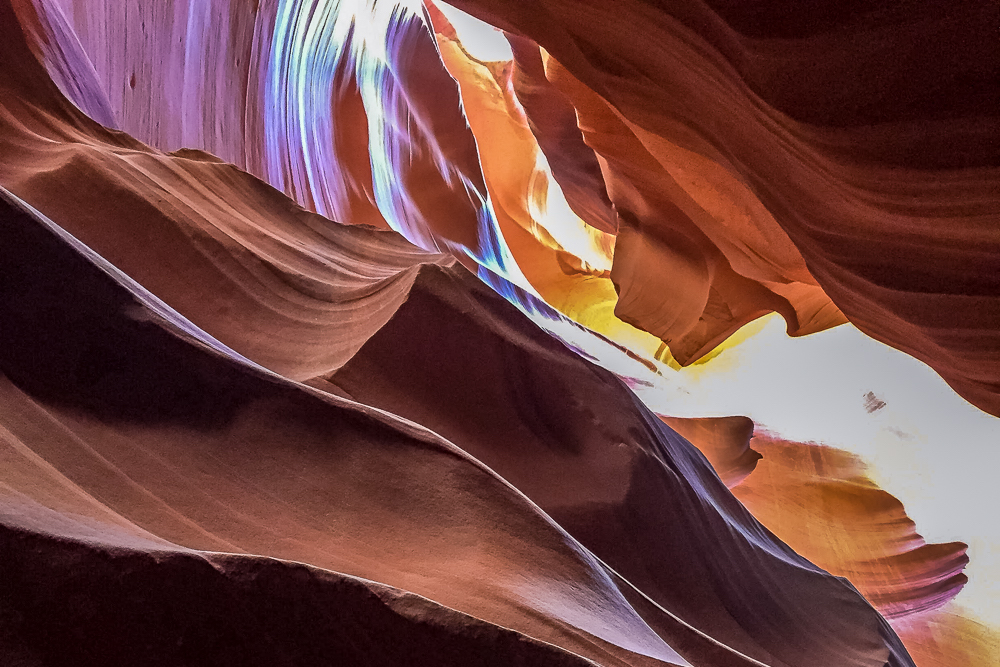

Grand Circle Tour
American Southwest
Scenic Highway 12
Utah’s Scenic Hwy 12 - A Journey through Time, connecting Bryce and Capitol Reef National Parks is 122 miles of pure driving bliss. Other worldly scenery at every turn as we went from desert to alpine mountain nearly 9,000 ft above sea level back to desert.
Immediately on leaving Bryce Canyon we came across the Red Canyon and drove through the two arches. Then the color of the sandstone changed from Red to Yellow as we navigated the hairpin turns of the Escalante Canyon.
We took a detour to see the Kodachrome Basin State park - which was one place one this trip we felt like we could have skipped.


Devil's Garden
Another detour via the Hole in the Wall Road a bumpy sand and gravel road to see Devil’s Garden with its unique Hoodos, crazy rock formations and arches.


Then we went through the Dixie National forest - up the Boulder Mountains and came across a stunning viewpoint. We were surrounded by birch trees and snow and could see the Waterpocket fold of the Capitol Reef National Park in the distance.
By the time we arrived in Torrey - the gateway to Capitol Reef National Park, it was getting really windy. We stayed in lovely cabins of Capitol Reef resort.


Capitol Reef National Park
Capitol Reef is most commonly known for the Waterpocket Fold - which is a 100 mile long “wrinkle” in the earth’s crust. We figured the 25 mile Scenic loop was the best way to see all that Capitol Reef had to offer. We picked up a map at the Visitor Center and setoff to explore. Saw various unique rock formations among the continuous line of multicolored cliffs.


Arches National Park
We drove to Moab and had a delicious lunch at Quesadilla Mobila. After some rest at the hotel we went to explore Arches National Park.
Arches National Park contains the highest collection of stone arches in the world - 2,000 and counting. Some are iconic such as the Delicate Arch (one on Utah’s licence plates). Other shatter world records like pencil thin Landscape Arch, one of the longest freestanding arches in the world. Within the park there is an 18 mile scenic drive along many extraordinary rock formations.
First stop - Park Avenue - jaw dropping viewpoint peers down a ravine walled in by monolithic sandstone formations, some vaguely human in appearance. Balance Rock, Delicate Arch Viewpoint, Landscape Arch, and finally to the windows section of the park. First we went to the Double Arch, where Ronak went crazy taking pictures of the sun reflecting on the intricate design of arches above. By the time we got to the North window, South window and Turret Arch the sun had started to set.
It got really dark by the time we left the park and we felt like time was too short and we need to come back another time to explore.


Canyon Lands
We got up before dawn to catch the iconic sunrise shot at Mesa Arch in Canyonlands National Park and it did not disappoint. It is a very popular spot and it was no surprise to see a lot of folks already camping out.
But there was also a photography class group and they stood very close to the Arch and placed their tripods on the edge. This prevented other people from getting unobstructed shot of the full arch. Despite this minor annoyance we got some great photos before the sun came up.
As the sun hit the arch, the entire arch glowed. It was an awe inspiring sight to see the glow on the arch and the view of the red cliffs, ridges and ravines through the opening of the arch. We stayed for sometime after most folks departed and it was a great experience overall.


Dead Horse Point
Nearby, Dead Horse Point State park offers spectacular vista with views of the Canyonlands National Park and Colorado river. After a quick stop we were on our way to Monument Valley.


There's more ...:)
- 
-

-
-